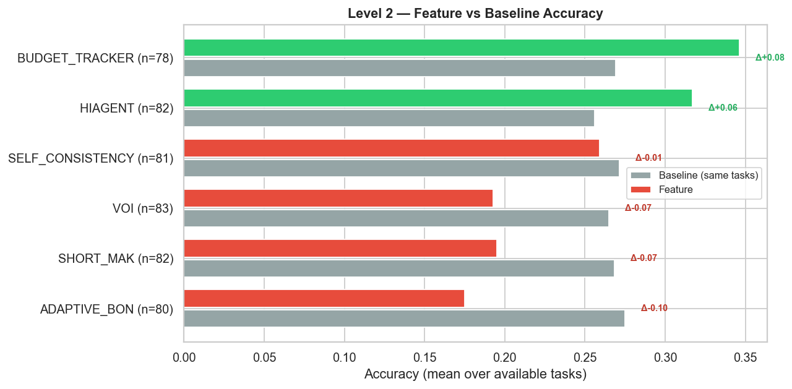
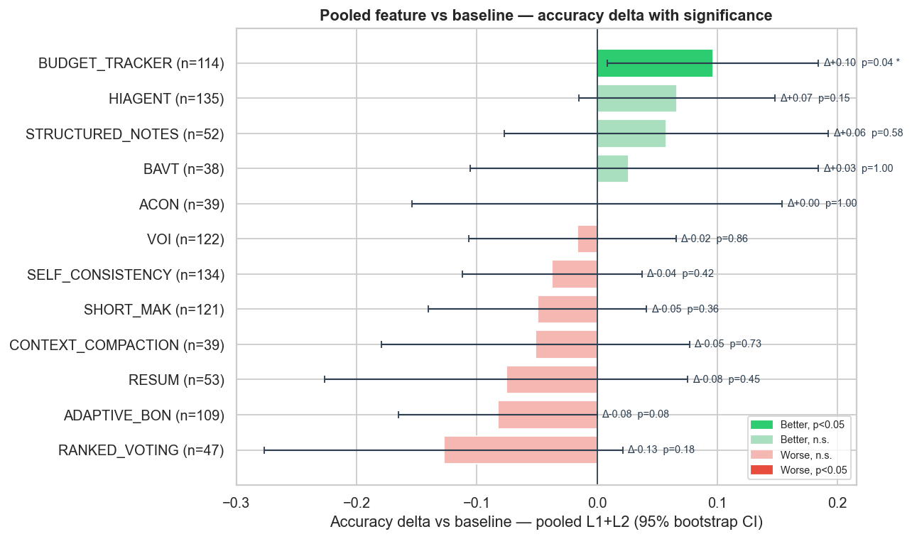

Result summary
GAIA is a benchmark of real-world assistant tasks that require multi-step reasoning, tool use, and web browsing, with short exact answers that make scoring unambiguous. Tasks come in three difficulty levels; this project uses Level 1 and the harder Level 2.
The experiment checks whether agent behavior on GAIA can be improved with additional inference-time compute: Best-of-N, voting, judge/verification, context management, and budget-aware techniques. Current setup: GAIA Level 1 (53 tasks) and the harder Level 2 (86 tasks), Qwen 3.5 9B, and the project launcher infrastructure. Pooling both levels lets us test statistical significance.
Baseline run
The baseline was evaluated on all 53 GAIA Level 1 tasks. Mean accuracy was 0.453, mean runtime was 4.5 minutes per task, and mean token usage was 509k tokens per task.

Level 1 (53 tasks)
The comparison shows that test-time techniques are not uniformly beneficial. The best gains came from BUDGET_TRACKER, VOI, HIAGENT, STRUCTURED_NOTES, and BAVT. SHORT_MAK and ACON were neutral. ADAPTIVE_BON, CONTEXT_COMPACTION, SELF_CONSISTENCY, RESUM, and RANKED_VOTING reduced accuracy in the current setup.
| Technique | Available tasks | Accuracy delta | Observation |
|---|---|---|---|
| BUDGET_TRACKER | 36 | +0.14 | Best accuracy gain among tested techniques. |
| VOI | 39 | +0.10 | Strong gain with noticeable time overhead. |
| HIAGENT | 53 | +0.08 | Positive effect on the full task set. |
| STRUCTURED_NOTES | 52 | +0.06 | Improves accuracy while reducing mean time and staying close to baseline token usage. |
| BAVT | 38 | +0.03 | Small gain with extra cost. |
| SHORT_MAK, ACON | 39 | +0.00 | Neutral accuracy effect. |
| ADAPTIVE_BON, CONTEXT_COMPACTION, SELF_CONSISTENCY, RESUM, RANKED_VOTING | 29-53 | -0.03 to -0.13 | Reduced accuracy in the current configuration. |

Cost
Cost was compared along two axes: time per task and token usage. Baseline means were 4.5 minutes and 509k tokens per task. ACON, SHORT_MAK, HIAGENT, and STRUCTURED_NOTES were faster on average. RESUM and VOI used fewer tokens than baseline, while STRUCTURED_NOTES stayed near baseline token usage.


Real usage
The efficiency quadrant shows the trade-off between accuracy delta and overhead. STRUCTURED_NOTES is a strong lightweight technique: it improves accuracy without extra token/time budget. HIAGENT also improves accuracy with low overhead. BUDGET_TRACKER gives the largest gain but requires additional compute.

Level 2 (86 tasks)
We reran the feature-vs-baseline analysis on the harder GAIA Level 2 set (86 tasks, baseline accuracy 0.265). On matched tasks, only BUDGET_TRACKER (+0.08) and HIAGENT (+0.06) improve over baseline, while VOI, SHORT_MAK, and ADAPTIVE_BON regress — a stricter picture than Level 1.

Pooling Level 1 and Level 2 into paired per-task outcomes lets us test significance with McNemar's exact test and a bootstrap 95% CI. Only BUDGET_TRACKER survives: +0.10 accuracy at p=0.04.

Limitations
- Limited compute budget.
- Level 2 coverage is still partial (about 82–85 of 86 tasks per feature) and spans fewer techniques than Level 1.
- A single small model, Qwen 3.5 9B, was used.
- Only one dataset is considered.
- Even pooled across Level 1 and Level 2, only BUDGET_TRACKER reaches p<0.05 (McNemar); other effects stay within noise.
Conclusions
Technique selection can increase benchmark accuracy, and the effect holds up under scrutiny for at least one technique. This suggests that naive scaling-law estimates for agentic inference may be systematically low if they ignore inference-time interventions.
- BUDGET_TRACKER is the standout: +0.14 on Level 1, +0.08 on the harder Level 2, and the only technique that stays significant when pooling both levels (Δ+0.10, McNemar p=0.04 over 114 paired tasks).
- HIAGENT is the most consistent runner-up, improving on both Level 1 (+0.08) and Level 2 (+0.06), though pooled it does not reach significance (p=0.15).
- STRUCTURED_NOTES stays practical on Level 1: +0.06 accuracy while reducing mean time and staying close to baseline token usage.
- Level 2 is stricter — VOI, SHORT_MAK, and ADAPTIVE_BON that looked neutral or positive on Level 1 regress on the harder set, and naive SELF_CONSISTENCY and RANKED_VOTING remain weak.
- Pooled across 1003 paired tasks, most gains fall within the 95% bootstrap CI, so single-level results should be read as directional rather than proven.
- Next steps include testing technique combinations, widening Level 2 coverage, writing a LessWrong post, and extracting reusable components:
gaia-experiment-launcherandtts-proxy-framework.